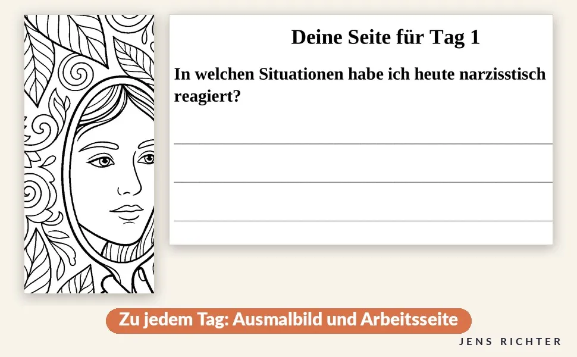

In 30 Tagen weg vom eigenen Narzissmus
Eigene narzisstische Züge erkennen und ändern: 30 Tage, jeden Tag ein Thema und eine Aufgabe.
Öffnet amazon.de in einem neuen Tab.
Du erkennst narzisstische Züge an dir und willst etwas ändern? Dann ist dieses Buch für dich.
Hier geht es nicht um den Narzissten im Leben anderer. Es geht um dich. In 30 Tagen schaust du dir ehrlich an, wie du mit anderen umgehst und woher das kommt. Jeder Tag hat ein Thema, eine verständliche Erklärung und eine Aufgabe für den Alltag. Die Tage passen neben Job und Familie. Eine Wunderlösung ist das nicht. Du brauchst Ehrlichkeit mit dir selbst und etwas Geduld.

Blick ins Buch: Zu jedem Tag ein Ausmalbild und eine Arbeitsseite
Jeder der 30 Tage ist gleich aufgebaut: ein Ausmalbild zum Thema des Tages, zwei Kapitel mit Hintergrund und Übungen, eine Aufgabe für den Alltag und eine Arbeitsseite mit Fragen und Platz zum Schreiben. Du startest mit einer ehrlichen Selbstanalyse und schaust dir an, woher dein Verhalten kommt. Danach geht es Tag für Tag um Empathie, Zuhören, Verantwortung, Vergebung, Demut, Grenzen und Ehrlichkeit. Das Buch ersetzt keine Therapie. Bei einer narzisstischen Persönlichkeitsstörung ist professionelle Hilfe der richtige Weg.
Lesen allein reicht nicht. Diese Aufgaben probierst du im Alltag aus.
Ein Narzissmus-Tagebuch führen
Du schreibst auf, wann du narzisstisch reagiert hast und was es ausgelöst hat. Nach ein paar Tagen kannst du Muster erkennen.
Kindheitserinnerungen erforschen
Du schaust dir an, woher dein Verhalten kommt, zum Beispiel aus der Kindheit oder aus dem, was die Gesellschaft erwartet.
Über Gefühle sprechen
Du sprichst mit einem Freund über seine Gefühle und hörst ihm zu.
Ein ungelöstes Problem angehen
Du nimmst dir ein Thema vor, das dich belastet, und zerlegst es in kleine Schritte.
Dieses Buch ist ein Ratgeber und kein Ersatz für eine Therapie oder Beratung. Wenn es dir gerade richtig schlecht geht, hol dir bitte Hilfe, zum Beispiel bei der Telefonseelsorge unter 0800 111 0 111 (kostenlos, rund um die Uhr).
Öffnet amazon.de in einem neuen Tab.
Mehr zum Thema Persönlichkeitsentwicklung
 In 30 Tagen zur emphatischeren Persönlichkeit30 Tage lang jeden Tag ein Beispiel aus dem Alltag und eine kurze Übung, um Empathie zu üben.
In 30 Tagen zur emphatischeren Persönlichkeit30 Tage lang jeden Tag ein Beispiel aus dem Alltag und eine kurze Übung, um Empathie zu üben. Positiv, die Kraft positiver GedankenWie du Gedanken wie „Das schaffe ich eh nicht“ bemerkst, prüfst und durch fairere ersetzt.Selbstbewusst, ich werde mir selbst bewusstDeine Gedanken, Gefühle und Muster besser kennenlernen, damit du sicherer auftrittst. Mit kurzen Übungen für den Alltag.
Positiv, die Kraft positiver GedankenWie du Gedanken wie „Das schaffe ich eh nicht“ bemerkst, prüfst und durch fairere ersetzt.Selbstbewusst, ich werde mir selbst bewusstDeine Gedanken, Gefühle und Muster besser kennenlernen, damit du sicherer auftrittst. Mit kurzen Übungen für den Alltag. Selbstwert: Ich bin es mir selbst WertWie du freundlicher und fairer mit dir umgehst, egal ob du 15 bist oder 50.
Selbstwert: Ich bin es mir selbst WertWie du freundlicher und fairer mit dir umgehst, egal ob du 15 bist oder 50. Achtsamkeit entfaltenWieder mitbekommen, was gerade passiert: 118 kleine Ideen für Achtsamkeit mitten im Alltag.
Achtsamkeit entfaltenWieder mitbekommen, was gerade passiert: 118 kleine Ideen für Achtsamkeit mitten im Alltag. Stück für Stück zu mehr SelbstvertrauenEin Stufenplan für Erwachsene: vom „Das kann ich nicht“ zum „Ich probier’s“.
Stück für Stück zu mehr SelbstvertrauenEin Stufenplan für Erwachsene: vom „Das kann ich nicht“ zum „Ich probier’s“.